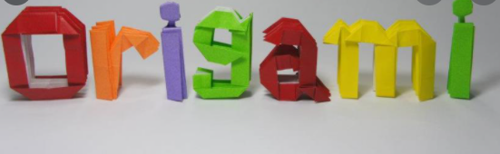

Origami Instructions and Diagrams
Step by Step Diagram are probably the most popular and easiest to follow way to show how to fold things with paper.
Trying to find good oragami Instructions on th Internet can be a lot of work though. To help your search we've put
together the largest database of free origami diagrams anywhere on the Internet.